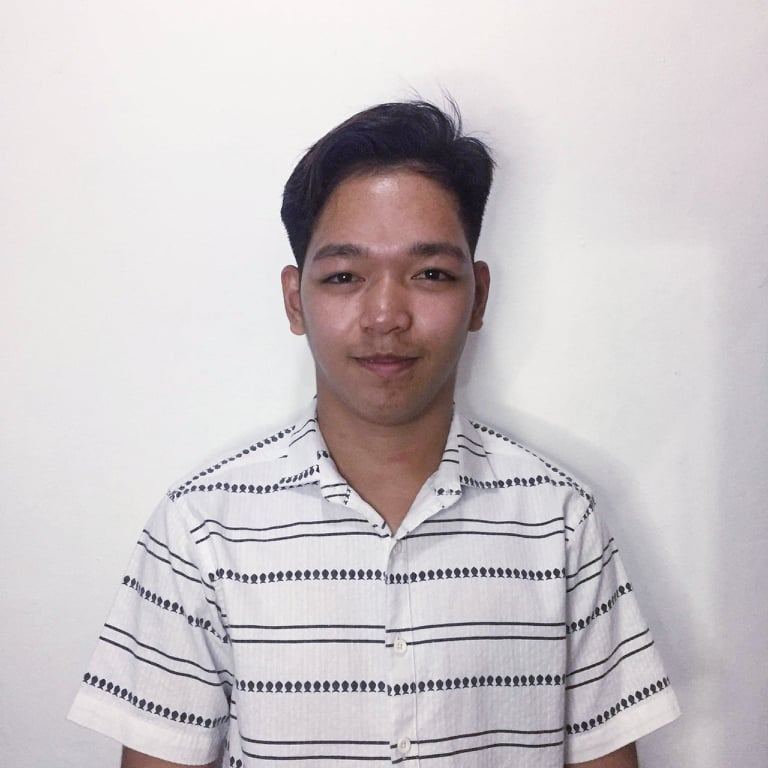

Resume

Knowledgeable and thorough Information Technology with superior attention to detail. To acquire valuable knowledge and skills to complement those that I have learned from school in an actual job environment. In return, I offer my service and determination to be an asset to your company throughout the duration of my training period.
PERSONAL INFORMATION
- Name: Jojo Domingo
- Address: Heritage Homes Barangay Gregorio Trece Martirez Cavite
- Birthday: 3 June 2000
- Civil Status: Single
- Nationality: Filipino
- Religion: Roman Catholic
- Contact Number: +63 951 287 4070
EDUCATION
Aliang Elementary School
2007-2013
Trece Martires City National High School
2013 - 2017
Notre Dame of Trece Martirez
2017 - 2019
Technology and Vocational Livelyhood - Strand
Information and Communications Technology - Track
Graduated as a Silver Awardee
Cavite State University Main Campus-Indang Cavite
2019 - Present
Bachelor of Science in Information Technology
SKILLS
- Oriented in Microsoft Office Applications such as:
- Microsoft Office Word
- Microsoft Office Excel
- Microsoft Office Powerpoint
- Oriented in HTML.
- Capable of editing pictures, files and presentations using different Microsoft Windows Applications.
- Accuracy and attention to detail
- Organization and prioritization
- Time management
- Adaptibility and flexibility
AWARDS & SEMINARS ATTENDED
Notre Dame of Trece Martirez
2017 - 2019
Senior High School Conduct and Silver Awardee